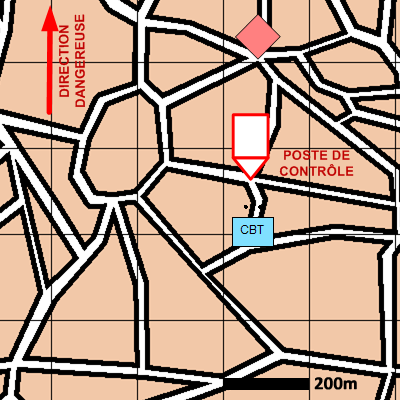

NIVEAU : Pion
ARME : Melee
MISSION : Animer Poste De Controle
NIVEAU : Pion
ARME : Melee
MISSION : Animer Poste De Controle
Schéma de modélisationAnimer Un Poste De Contrôle |
Paramètres obligatoiresPointPosition du poste de contrôle. Dureté du filtrage fouille sommaire Fouille rapide des individus au passage du point de contrôle. fouille approfondie Fouille approfondie des individus au passage du point de contrôle. passage interdit Interdiction de passage au point de contrôler. |
|
Paramètres optionnelsFiltrer Individus IsolésDirection Dangereuse Limite gauche / Limite droite Lignes de début et fin de mission [LDM/LFM] |
||
| Fiches missions |  |